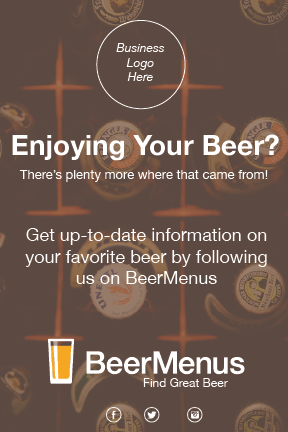
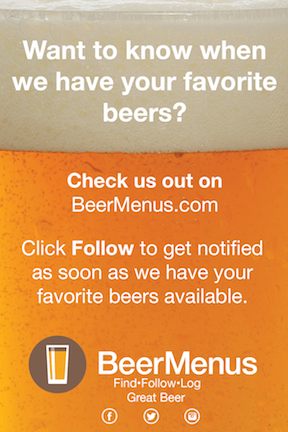
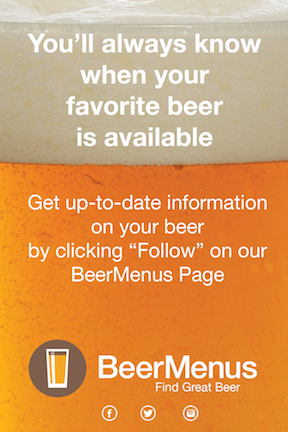

RESULTS
Tap Takeover Poster

Table Tents
   Previous Project: XXXXXNext Project: XXXXXXDesigning custom point-of-sale (POS) materials for BeerMenus, a startup company that provides beer retailers with inventory management and in-store menu display solutions.
Many beer retailers lack in-house design teams and the capacity to generate their own marketing materials. Our goal was to create customizable graphics for retailers to download and use to drive customers to their BeerMenus pages. Many of these businesses had expressed their frustration of not having marketing materials available and came to BeerMenus seeking a solution.
Client: CampusPerks, an on-demand tutoring service
Roles: UX/UI design + front-end development - page styling, logo design, graphics and movie editing, typography, lo- and hi-fidelity mockups, content.
Target users were patrons who consume beer. What kind of beer drinkers? Patrons who enjoy beer and who may be potential new users of BeerMenus.
I worked with fellow members of Startup Institute's Fall 2015 cohort on a 4-person team made up of a marketer, two developers, and myself as the designer.
Our project was short-term, lasting only a few weeks. BM was also undergoing a visual redesign at the time, which required constant communication regarding the changing creative guidelines for generating these graphics.
In order to set our site apart from those of the other tutoring services available, we needed striking visuals and copy.
We visited some establishments in-person and asked managers and owners about their potential use(s) for inventory management like BeerMenus.
After discussion on which media were ideal for the POS materials, we decided that table tents, coasters, and posters would be the most-viewed materials in restaurants and retailers.
Needed to consider the colors, especially since many bars and restaurants have low lighting. We needed a design that would catch the eye in all light settings. I was responsible for designing the table tents and Tap Takeover poster.
We also needed to add in copy that would drive patrons to visit the establishments' profiles on BeerMenus. Specifically, we wanted patrons to keep up to date with the establishment's individual inventory.